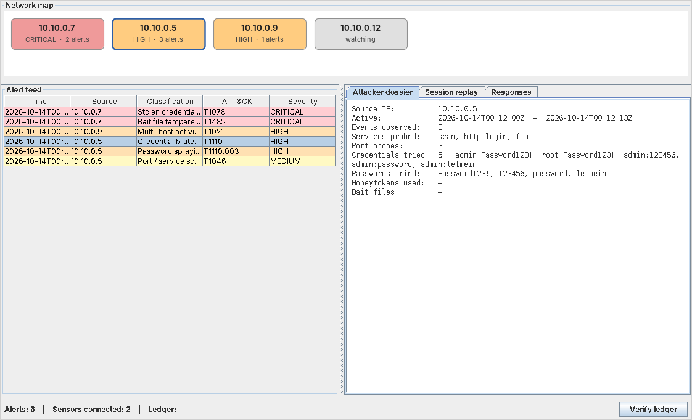
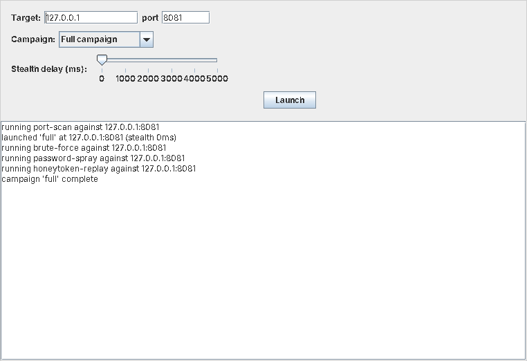
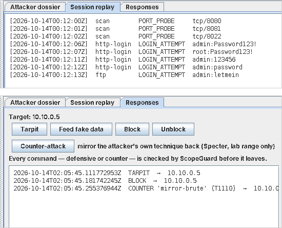
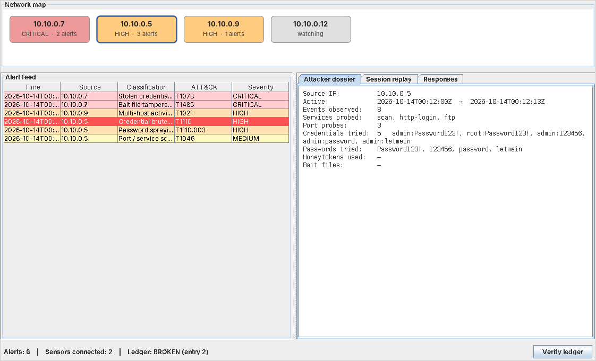
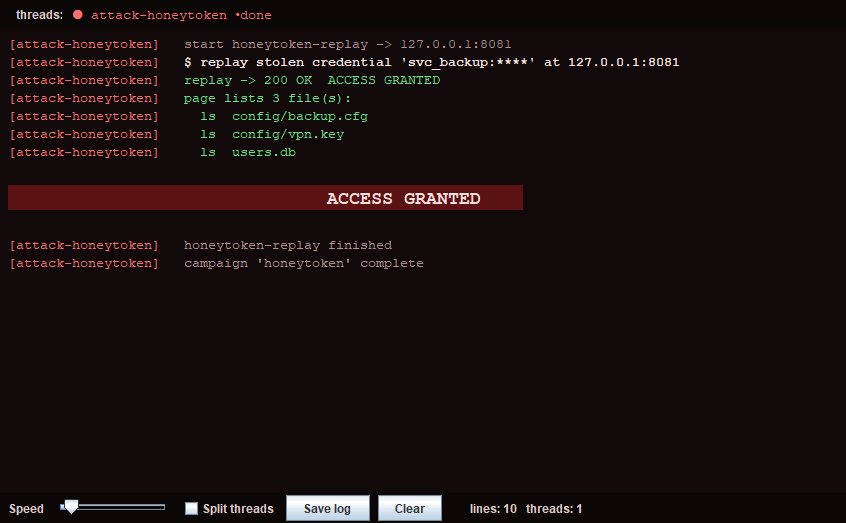
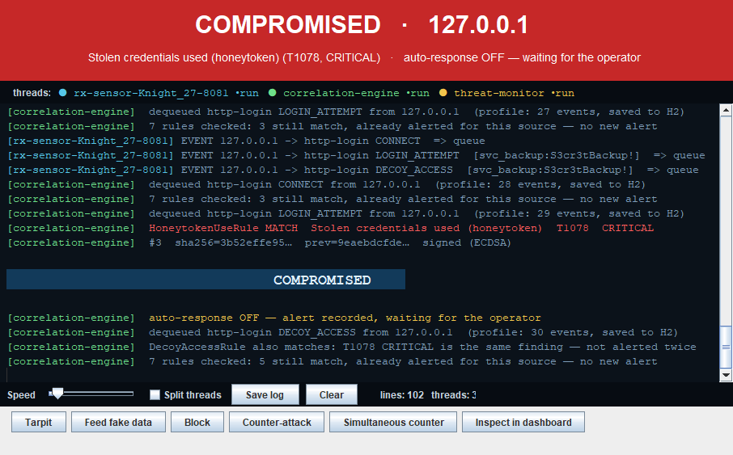
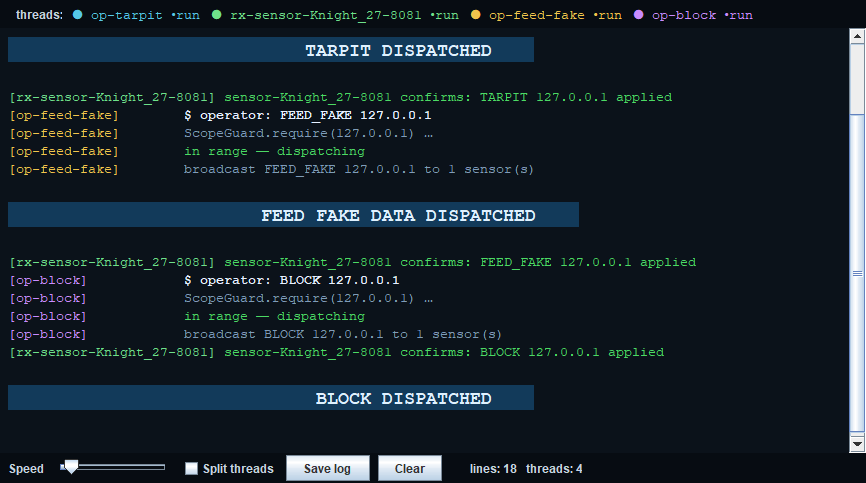
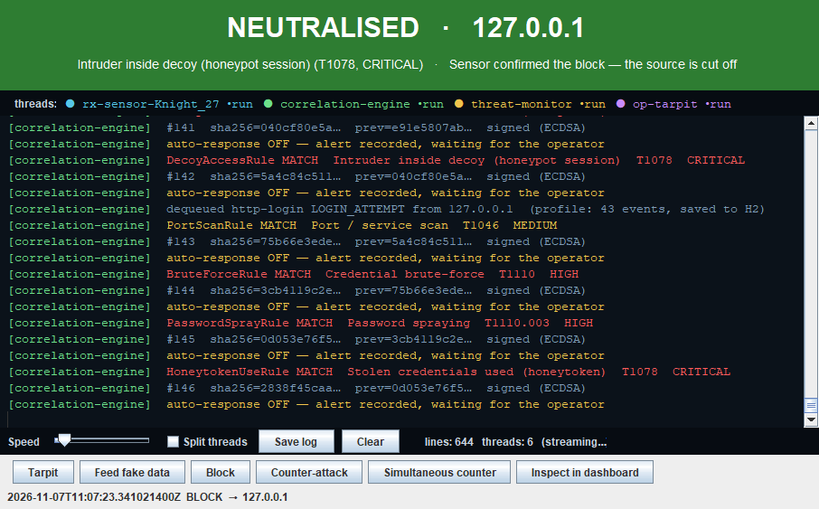
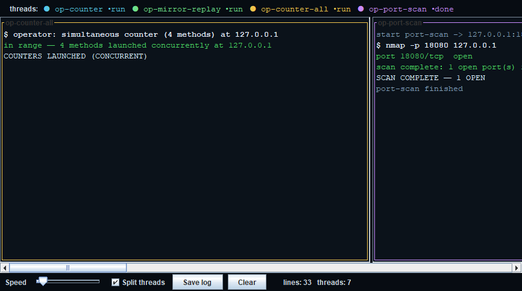
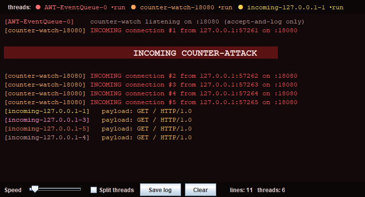

ICE-2206 · Project report
MirageDeception-Based Intrusion Detection with Integrated Attack Simulation and Active Defense
Abstract
Mirage is a network-defence system built around deception. Instead of trying to pick one attacker out of millions of normal events, it deploys decoy services and bait files that no legitimate user has any reason to touch, so that virtually every interaction with them is hostile and every alert is high-confidence. The system is composed of three cooperating Java applications: a central Console (the blue-team brain), lightweight Sensors that host the decoys on each protected machine, and Specter, an integrated attack simulator (the red team) used to drive and demonstrate the system inside an authorised lab network. When a Sensor observes contact with a decoy, it streams the interaction to the Console, which builds a per-source attacker profile, classifies the behaviour against the MITRE ATT&CK catalogue, records it in a tamper-evident hash-chained ledger, and selects an active-defence response: slowing the attacker with a tarpit, feeding fabricated data, or blocking the source across the whole network. The project exercises the advanced-Java syllabus: TCP client–server communication secured with TLS, extensive multithreading, a Swing dashboard, and an object-oriented design organised around the Template Method, Strategy, Command, Observer and Factory patterns.
1.Introduction
1.1Overview
Traditional intrusion detection must separate rare attacks from overwhelming normal traffic, which produces many false alarms and alert fatigue. Mirage takes the opposite approach, known as deception-based defence: it plants decoys (fake services and bait files) that appear valuable but serve no legitimate purpose. Because no real user has any reason to touch a decoy, any contact with one is strong evidence of malicious activity. Mirage therefore turns a hard detection problem into a simple one: watch the traps, and treat whoever touches them as an intruder. Sensors host the decoys, the Console collects and acts on what they see, and Specter plays the intruder so the team can build, test, and demonstrate the system safely.
1.2Purpose and Significance
The purpose is to design and build a working deception-based detection and active-defence platform that exercises the advanced Java topics of the course while teaching both the defensive and offensive points of view. Deception is an established professional practice (honeypots, honeytokens, products such as Thinkst Canary). Its significance: every alert is high-confidence; decoys give early warning of reconnaissance, lateral movement, and ransomware; and planted honeytokens reveal credential theft the moment they are used.
1.3Scope
In scope: decoy services (fake HTTP admin login, FTP, Telnet/SSH banner), bait files, honeytokens, a central Console with a Swing dashboard, attacker profiling, MITRE ATT&CK classification, a tamper-evident hash-chained ledger, active-defence responses (tarpit, feed fake data, network-wide block), and the Specter attack simulator.
Mirage runs only inside a self-contained lab network of the team's own machines/VMs. It never targets external or third-party systems. All active-defence and simulated-attack actions are confined by an allowlist (ScopeGuard) to a declared lab range, default-deny. The project does not perform real exploitation or denial-of-service of outside hosts; the "turn it around on the attacker" behaviour is trapping, slowing, and misleading the attacker on our own infrastructure, the lawful, standard form of active defence.
Out of scope: Mirage is an educational prototype, not a production IDS/IPS.
1.4Contributions
| Member | Roll | Primary responsibility |
|---|---|---|
| Nobo Ishraque | 25549011082 | Console server: TLS thread-pool networking, the producer–consumer pipeline, correlation + ATT&CK classification, and the hash-chained ledger. Integration lead. |
| Adil Akhtab Abir | 25549011096 | Sensor: the Decoy hierarchy and fake services, the bait-file watcher, the heartbeat monitor, and the active-response commands. |
| Noria Khan Sroti | 25549011020 | Specter simulator and its ScopeGuard, both Swing UIs, the embedded database and DAO layer, and the report. |
2.Methodology
2.1Development Process
Iterative and incremental, one subsystem at a time, so there is always a running program to demonstrate. Each member owns a feature branch; branches integrate weekly against agreed interfaces. Increments: design → networking skeleton → decoys + detection → classification, ledger, responses → Specter → Swing UIs → integration + lab testing. Core logic (ledger hashing, detection rules, scope guard) is covered by JUnit tests.
2.2Technologies and Tools
| Area | Choice |
|---|---|
| Language | Java 17 (runs on JDK 17+; CI tests on JDK 17) |
| Networking | java.net sockets, TLS via javax.net.ssl |
| Concurrency | java.util.concurrent (thread pools, BlockingQueue, scheduled tasks) |
| UI | Java Swing (SwingWorker, custom-painted map) |
| Persistence | Embedded H2 via JDBC (DAO) |
| Integrity | SHA-256 (java.security.MessageDigest) for the ledger |
| Build/test | Maven + JUnit 5 |
2.3Challenges and Solutions
- Responsive UI: all blocking work off the EDT, updates via
invokeLater. - Thread-safe shared state: a single consumer owns all profile/ledger mutation.
- Cross-sensor correlation: aggregate events by source in a time window.
- Safe, lawful active defence: a default-deny
ScopeGuardbefore any outbound action. - Cheap tarpits: slow single-byte handlers hold many connections.
3.Design
3.1System Architecture (Figure 1)
Hub and spoke: Sensors host decoys and watch bait files, opening one outbound TLS connection to the Console; the Console accepts many Sensors on a thread pool, runs a producer–consumer pipeline into the correlation/classification engine, writes the ledger and the database, and drives the Swing dashboard; Specter attacks the Sensors' decoys from inside the lab range.
flowchart LR
subgraph B["Laptop B: attacker"]
SP["Specter<br/>campaigns, Attacker"]
CW["CounterWatch<br/>accept-and-log only"]
end
subgraph A["Laptop A: protected host"]
subgraph S["Sensor"]
D["Decoys<br/>HTTP 8081, FTP 8021, Telnet 8023"]
BF["Bait-file watcher"]
DS["DefenceState<br/>block, tarpit"]
end
subgraph C["Console"]
SRV["ConsoleServer<br/>TLS, one rx thread per Sensor"]
Q[["BlockingQueue of AttackEvent"]]
ENG["CorrelationEngine<br/>rules, ledger, policy"]
L[("Hash-chained ledger<br/>and H2 database")]
UI["Dashboard, threat popups,<br/>process shells"]
end
end
SP -- "attacks, ScopeGuard-checked" --> D
D -- "EVENT" --> SRV
BF -- "EVENT" --> SRV
SRV --> Q --> ENG --> L
ENG -- "AlertBus, TraceBus" --> UI
ENG -- "response, ScopeGuard-checked" --> SRV
UI -- "operator command" --> SRV
SRV -- "COMMAND" --> DS
DS -- "ACK" --> SRV
DS -. gates .-> D
UI -- "operator counter, ScopeGuard-checked" --> CW
ScopeGuard, so none can reach an address outside the configured lab range.3.2Component Responsibilities
| Component | Responsibility | Concurrency |
|---|---|---|
| Console | Correlate, classify, keep ledger + DB, dashboard, issue responses | Connection pool + single consumer + scheduled heartbeat checker |
| Sensor | Host decoys, watch bait files, run response commands | Decoy pools + file-watch thread |
| Specter | Generate recon/brute/spray/honeytoken attacks on lab decoys | Pool of simulated attackers |
3.3Object-Oriented Class Design (Figure 2)
Four families, each built on an abstraction: Decoy (Template Method) → fake services; DetectionRule (Strategy) → rules; ResponseAction (Command) → responses; AttackStrategy (Strategy) → attacks. Supported by AttackerProfile, AlertLedger/LedgerEntry, and an AlertBus (Observer).
classDiagram
direction TB
class Decoy {
<<abstract>>
+start(sink, gate)
+stop()
#interact(socket, sourceIp, sourcePort, sink)*
}
class DetectionRule {
<<interface>>
+classify(profile) Optional~Classification~
}
class ResponseAction {
<<interface>>
+execute()
+describe() String
}
class AttackStrategy {
<<interface>>
+run(target, trace)
+name() String
}
Decoy <|-- FakeHttpLoginDecoy
Decoy <|-- FakeFtpDecoy
Decoy <|-- FakeTelnetDecoy
DetectionRule <|.. PortScanRule
DetectionRule <|.. BruteForceRule
DetectionRule <|.. PasswordSprayRule
DetectionRule <|.. HoneytokenUseRule
DetectionRule <|.. DecoyAccessRule
DetectionRule <|.. BaitFileRule
DetectionRule <|.. LateralMovementRule
ResponseAction <|.. TarpitAction
ResponseAction <|.. FeedFakeDataAction
ResponseAction <|.. BlockSourceAction
AttackStrategy <|.. PortScanAttack
AttackStrategy <|.. BruteForceAttack
AttackStrategy <|.. PasswordSprayAttack
AttackStrategy <|.. HoneytokenReplayAttack
CorrelationEngine o-- AttackerProfile
CorrelationEngine --> DetectionRule : runs
CorrelationEngine --> AlertLedger : appends
CorrelationEngine --> AlertBus : publishes
CorrelationEngine --> ResponsePolicy : asks
AlertLedger o-- LedgerEntry
ResponsePolicy --> ResponseAction : creates
ResponsePolicy --> ScopeGuard : require()
Attacker --> AttackStrategy : runs
Attacker --> ScopeGuard : require()
Attacker use them. Decoy fixes the connection loop (accept, gate, serve on a pool) and leaves interact to each fake service.3.4Design Patterns Used
| Pattern | Where | Why |
|---|---|---|
| Template Method | Decoy | Fix the flow, vary the reply |
| Strategy | DetectionRule, ResponsePolicy, AttackStrategy | Pluggable algorithms |
| Command | ResponseAction | Queue/execute responses uniformly |
| Observer | AlertBus → dashboard; TraceBus → process shells | Decouple detection (and its narration) from UI |
| Producer–Consumer | network → BlockingQueue → engine; workers → ShellModel → Swing timer | Safe concurrency; paced display |
3.5Workflow: Detection to Response (Figure 3)
Attacker touches a decoy → Sensor sends an AttackEvent over TLS → Console enqueues it → the consumer updates the profile and runs the rules → a Classification is appended to the ledger and the DB and pushed to the dashboard → ResponsePolicy chooses actions → ScopeGuard approves the target → responses are sent to the Sensors (tarpit / feed fakes / block).
sequenceDiagram
autonumber
actor Sp as Specter
participant D as Decoy (Sensor)
participant S as ConsoleServer
participant E as CorrelationEngine
participant L as Ledger and H2
participant UI as Dashboard
participant G as ScopeGuard
Sp->>D: replay honeytoken (HTTP login)
D-->>Sp: 200 OK, canned admin page
D->>S: EVENT DECOY_ACCESS over TLS
S->>E: enqueue AttackEvent
E->>E: update profile, run rules
E->>L: append alert (SHA-256 chain, ECDSA)
E->>UI: AlertBus, threat popup COMPROMISED
alt auto-response on
E->>G: require(source)
else operator decides
UI->>G: Block, require(source)
end
G-->>S: in range, dispatch
S->>D: COMMAND BLOCK
D-->>S: ACK BLOCK applied
S-->>UI: popup NEUTRALISED
Sp->>D: next attempt
D-->>Sp: TCP reset, CONNECTION BLOCKED
ScopeGuard approves the source; the popup changes to NEUTRALISED on the Sensor's acknowledgement, not on the send.3.6Database Design (Figure 4)
Embedded H2 via a DAO layer. Tables: sensor, attack_event, attacker_profile, alert (hash-chained, with prev_hash/hash, signed by a key kept in data/ and continued across restarts), honeytoken, block_rule. The schema is in db/schema.sql.
erDiagram
SENSOR ||--o{ ATTACK_EVENT : reports
ATTACKER_PROFILE ||..o{ ATTACK_EVENT : "src_ip"
ATTACKER_PROFILE ||..o{ ALERT : "src_ip"
ATTACKER_PROFILE ||..o{ BLOCK_RULE : "src_ip"
ALERT |o..o| ALERT : "prev_hash chains to hash"
HONEYTOKEN |o..o{ ATTACK_EVENT : "matched in payload"
SENSOR {
BIGINT id PK
VARCHAR hostname
VARCHAR ip
VARCHAR status
TIMESTAMP last_heartbeat
}
ATTACK_EVENT {
BIGINT id PK
BIGINT sensor_id FK
VARCHAR src_ip
TIMESTAMP ts
VARCHAR action
CLOB payload
VARCHAR decoy_type
}
ATTACKER_PROFILE {
VARCHAR src_ip PK
TIMESTAMP first_seen
TIMESTAMP last_seen
INT event_count
VARCHAR techniques
VARCHAR severity
}
ALERT {
BIGINT id PK
VARCHAR src_ip
VARCHAR classification
VARCHAR attack_technique
VARCHAR severity
CHAR prev_hash
CHAR hash
VARCHAR signature
VARCHAR key_id
VARCHAR alert_ts
}
HONEYTOKEN {
BIGINT id PK
VARCHAR token_value
VARCHAR planted_location
BOOLEAN used
}
BLOCK_RULE {
BIGINT id PK
VARCHAR src_ip
VARCHAR scope
BOOLEAN active
}
4.Implementation
The code is in the repository under src/main/java/com/mirage/. Key pieces:
- TLS thread-pool Console server:
console/ConsoleServer.java(TLS when a keystore is configured; one receive thread per Sensor). - Decoy hierarchy (Template Method):
sensor/Decoy.javaand the HTTP, FTP and Telnet decoys. - Detection rules (Strategy):
console/detection/(port scan, brute force, password spray, honeytoken use, decoy access, bait file, lateral movement). - Hash-chained ledger:
console/AlertLedger.java(SHA-256 link, ECDSA signature,verify()), tested inAlertLedgerTestandLedgerSignatureTest. - Producer–consumer pipeline:
console/CorrelationEngine.java,console/AlertBus.java. - Scope-guarded responses (Command):
console/response/,console/ResponsePolicy.java, and the safety boundarycommon/ScopeGuard.java(tested). - Specter (Strategy, scope-guarded):
specter/AttackStrategy.java, the four attacks,specter/Attacker.java. - Live process shells (§5.5):
common/trace/,ui/shell/,console/ui/ThreatPopup.java,console/ui/OperationShells.java, and the jar'sLauncher.
Representative snippet: the safety boundary that gates every outbound action.
public void require(String ip) {
if (!isAuthorised(ip)) {
throw new SecurityException(ip + " is outside the authorised lab range");
}
}The full, compiling sources (98 JUnit tests passing) are the authoritative reference.
5.Result
The user-facing deliverable is two Swing applications, the blue-team Console dashboard and the red-team Specter console, and both are implemented. The screenshots below are from the running build: Figures 5–8 were captured on a headless display during a scripted demonstration, and Figures 9–14 during the automated dry run described in §5.5.
5.1Console dashboard (Figure 5)
The dashboard is a single window with four regions. A network map across the top shows one node per source that has touched a decoy; a node starts grey and turns from green through red as the worst alert raised against that source escalates. Down the left is the live alert feed: one row per alert, newest first, colour-coded by severity (red CRITICAL, orange HIGH, yellow MEDIUM, green LOW) and tagged with its MITRE ATT&CK technique. Selecting a row, or a map node, fills the attacker dossier / session replay / response panel on the right. A status strip along the bottom shows the alert count, the number of connected Sensors, and the ledger state, next to a one-click Verify ledger control.

5.2Specter console (Figure 6)
The operator picks a target in the authorised lab range, chooses a campaign (port scan, brute-force, password spray, honeytoken replay, or a full campaign), sets a stealth slider, and presses Launch. A live log shows each simulated attacker as it runs, and any target outside the ScopeGuard range is refused before a packet leaves the console.

5.3Session replay and active response (Figure 7)
Selecting an alert, or clicking a node on the map, opens that source's detail view. The attacker dossier lists the services it probed, the credentials and distinct passwords it tried, and any honeytokens or bait files it touched. The session replay shows, in order, exactly what the intruder sent at each decoy. The responses tab is a manual override: alongside the automatic active defence (the ResponsePolicy issues a tarpit, fabricated data, or a network-wide block by severity, enforced on the Sensor by its ConnectionGate) the operator can issue those same commands by hand. The operator can also launch a counter-attack, which reads the source's detected technique and turns that same method back on them (console.CounterOffensive + MirrorCounterStrategy), or a simultaneous counter, which runs every counter technique at once, each on its own thread (Attacker.launchConcurrent), so the source faces several methods in parallel. This is a direct use of the project's multithreading. Every command, defensive or counter, automatic or manual, passes ScopeGuard first, so a counter can only ever reach a source inside the lab range; a real external address is refused. This is a controlled, in-range demonstration of "turning it around", not a hack-back.

mirror-brute counter-attack, and COUNTER-ALL runs all four methods against the source at once, each on its own thread. Every command is checked by ScopeGuard before it leaves.5.4Ledger verification (Figure 8)
A one-click Verify ledger check walks the hash chain (each entry hashing the one before it, each hash signed with ECDSA) and reports the result in the status strip: verified while every link is intact, BROKEN the moment any stored alert is altered. When a link is broken, the dashboard names the offending entry and highlights its row in red.

5.5Live process shells and the two-host demo (Figures 9–14)
The final iteration makes the system's work visible as it happens, and splits the demo across two machines: Laptop A (the protected host) runs the Console and the Sensor, and Laptop B runs Specter. Both ship as one runnable jar (java -jar mirage.jar defender | attacker). The lab range becomes configurable so the two laptops can share a private LAN. A new start-up check, ScopeGuard.requireLabRange, refuses any range that is not private or loopback and /16 or narrower, so the boundary can be moved but never widened onto the internet.
Process shells. Every component narrates its steps as TraceEvents (time, channel, thread, stage, source, level, text) on a TraceBus, an Observer just like the AlertBus. Terminal-style shells subscribe and draw each line tagged and coloured by the thread that produced it, with a live thread strip on top. When several threads work at once, the shell splits into one pane per thread. The shell's model is a paced producer–consumer queue: worker threads add lines, a Swing timer drains a few at a time, so a sub-second scan still reads clearly. Pacing only delays the display, never the work. On Specter, each launch opens its own shell and ends with a banner derived from the decoy's real reply. A strategy reads that reply through ProbeReply: accepted, rejected, reset (blocked), no reply, or timed out (tarpit). The banners are therefore honest outcomes, not guesses (Figure 9).

Threat popup. On the Console, the first alert from a source opens a popup whose banner escalates with the worst severity seen: PROBE DETECTED → UNDER ATTACK → COMPROMISED. Beneath it, a shell shows the Console's own pipeline for that source: the receive thread queuing the event, the correlation engine dequeuing it, each rule's verdict, the ledger entry's hash and ECDSA signature, and the response decision. Because the popup opens after the alert that triggered it, a bounded TraceBacklog replays the lines it missed before going live, with no gap and no duplicate. Each rule raises an alert once per source and again only if its severity rises, so the ledger holds one entry per finding rather than one per packet (Figure 10).

Operator-gated response. A shared AutoResponse switch decides whether the ResponsePolicy acts on its own. In the demo it is off, so the operator answers from the popup. Each action opens an operation shell and runs on a worker thread named after it (op-tarpit, op-block, …). The shell shows the operator's command, the ScopeGuard check, the broadcast to the Sensors, and each Sensor's ACK, a new wire message sent once the command is applied (Figure 11). The ACK of a block moves the popup to NEUTRALISED (Figure 12), and on Laptop B the next attempt reads CONNECTION BLOCKED. A blocked decoy rejects with a TCP reset, which the attacker's prober tells apart from a peer that closes without answering. Ticking Auto-response restores fully automatic defence.

op-tarpit, op-feed-fake, op-block), passes ScopeGuard, is broadcast, and is confirmed by the Sensor's receive thread.
Counters, seen from both ends. The counter-offensive of §5.3 now shows both sides. On the Console, Simultaneous counter opens a counter shell split into one pane per counter thread, running a bounded set of four techniques at once (Figure 13). On Laptop B, a passive CounterWatch listener accepts and logs each incoming connection and raises an INCOMING COUNTER-ATTACK banner (Figure 14). It never sends anything back, so the counter's probes end in NO REPLY. Both directions remain confined to the lab range by ScopeGuard.

op-counter-all and each counter technique on its own thread, all running concurrently.
Verification. Besides 98 unit tests, the whole demo is exercised by an automated GUI dry run (tools/screenshots/LiveDemoShot.java). It starts the real Console, Sensor and Specter, presses their buttons the way the presenters would, and checks 27 outcomes: every campaign, every operator action, auto-response on and off, a counter reaching the counter-watch, and an out-of-range target being refused. Figures 9–14 come from that run.
Conclusion
Mirage reframes detection around deception to produce high-confidence alerts, and combines profiling, ATT&CK classification, a tamper-evident ledger, and scoped active defence to both explain and slow an attack. Pairing the Console with the Specter simulator makes the whole system self-contained and demonstrable on the team's own machines, inside the authorised lab range. Reflections on what was learned will be completed after implementation and testing.
References
- L. Spitzner, Honeypots: Tracking Hackers. Addison-Wesley, 2002.
- N. Provos and T. Holz, Virtual Honeypots. Addison-Wesley, 2007.
- The MITRE Corporation, "MITRE ATT&CK." https://attack.mitre.org
- B. Goetz et al., Java Concurrency in Practice. Addison-Wesley, 2006.
- E. Gamma et al., Design Patterns. Addison-Wesley, 1994.
- Oracle, "Java Secure Socket Extension (JSSE) Reference Guide," Java SE 17 docs.
- NIST, "FIPS 180-4: Secure Hash Standard," 2015.
Appendices
- A. Module layout: see the "Project layout" section of the repository's
README.md. - B. Core classes: the four pattern families under
src/main/java/com/mirage/(Figure 2). - C. Lab setup and authorised scope: run only on the team's own machines on an isolated or private network; set the lab range (
lab.cidrs) to that network, private or loopback and/16or narrower; generate the TLS keystore withkeytool(keep.jksfiles out of git). Two-laptop steps are indocs/TWO-LAPTOP-SETUP.md. - D. Build and run:
./mvnw -DskipTests package, thenrun-defenderon Laptop A andrun-attackeron Laptop B (seeREADME.mdandDEMO.md).